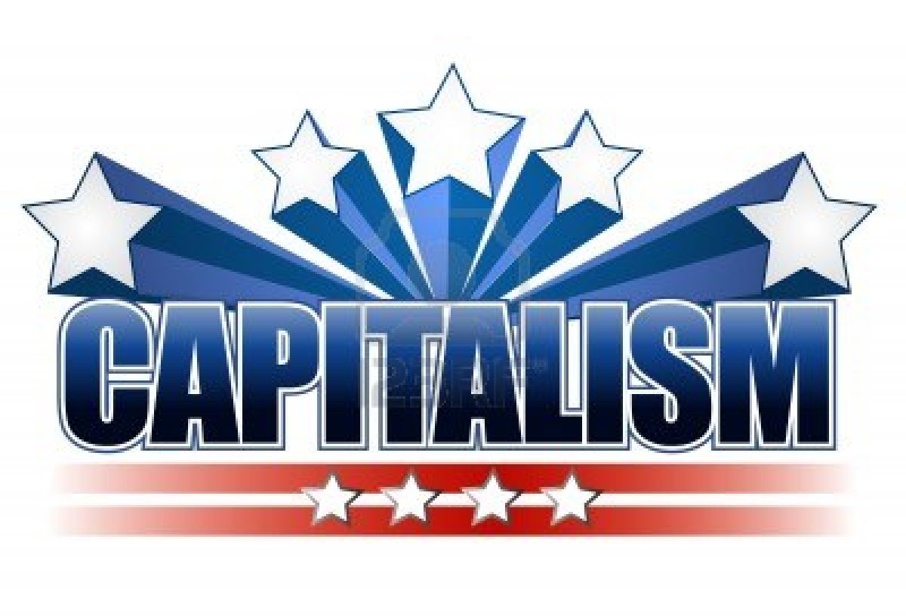

Γιώργος Καρανικόλας - Δημήτρης Τζήκας - Χάρης Ψαρράς
Αλεξάνδρειο ΤΕΙ Θεσσαλονίκης – Πληροφοριακά Συστήματα 1 – 5η Παρουσίαση
Πρέπει να σταματήσουμε να διακόπτουμε τα ενδιαφέροντα των ανθρώπων και να γίνουμε τα ενδιαφέροντα των ανθρώπων.
Ορισμένες εφαρμογές CRM χρησιμοποιούν απομακρυσμένες συνδέσεις Internet για την αποθήκευση αρχείων πελατών. Το Salesforce είναι μια δημοφιλής εφαρμογή CRM που παρέχεται μέσω μιας σύνδεσης στο Internet. Το μειονέκτημα αυτού του τύπου CRM είναι ότι η εταιρεία δεν έχει τον έλεγχο των δεδομένων και αν το απομακρυσμένο σύστημα CRM έχει διακοπή, η εταιρεία δεν είναι σε θέση να ανακτήσει τα αρχεία.
Εάν η εταιρεία είναι μικρή, τα θέματα κατάρτισης μπορεί να είναι ένα μικρό μειονέκτημα. Οι μεγάλες εταιρείες πρέπει να αναπτύξουν προγράμματα κατάρτισης για όλους τους υπαλλήλους τους. Για τα ‘μεγάλα’ CRM, αυτό μπορεί να σημαίνει την πρόσληψη επαγγελματιών για την εκπαίδευση υπαλλήλων σε ομάδες.
Η κατάρτιση αφαιρεί χρόνο για παραγωγικότητα, επομένως αποτελεί μειονέκτημα για ολοκαίνουργια συστήματα CRM. Η εκπαίδευση CRM είναι επίσης διαφορετική για τους διαχειριστές σε σχέση με το τακτικό προσωπικό, επειδή οι περισσότεροι CRM έχουν εξειδικευμένες λειτουργίες για διευθυντικά στελέχη. Οι απαιτήσεις εκπαίδευσης μπορεί να είναι τόσο σύντομες όσο λίγες ώρες ή μπορεί να διαρκέσουν αρκετές ημέρες.
Όπως και στα περισσότερα συστήματα, υπάρχει μια καμπύλη μάθησης όταν πρόκειται να εξοικείωση με ένα πρόγραμμα CRM. Η διοίκηση μπορεί να χρειαστεί να φέρει επαγγελματίες για να προσφέρει υποστήριξη στις ομάδες πωλήσεων και εξυπηρέτησης πελατών καθώς μαθαίνουν πώς να χρησιμοποιούν το σύστημα CRM στις καθημερινές τους συναλλαγές με πελάτες και πιθανούς πελάτες.
Οι εργαζόμενοι ενδέχεται να μην δουν τα άμεσα πλεονεκτήματα στη χρήση ενός συστήματος CRM στις επιχειρηματικές αλληλεπιδράσεις τους. Εξαιτίας αυτού, οι διαχειριστές και οι ιδιοκτήτες επιχειρήσεων θα πρέπει να αντιμετωπίζουν στιγμές ανοχής (Staff Resistance) του προσωπικού, καθώς προσπαθούν να προσελκύσουν ολόκληρη την ομάδα με τη διαδικασία.
Οι ιδιοκτήτες επιχειρήσεων και οι διαχειριστές μπορούν να αποδείξουν τα χαρακτηριστικά του συστήματος και να περιγράψουν επαρκώς τον τρόπο με τον οποίο θα ωφεληθούν οι πελάτες, και η επιχείρηση συνολικά.
Αν η εταιρεία αποφασίσει την λύση μιας τοπικής εφαρμογής CRM, υπάρχουν μεγάλα έξοδα για τη λειτουργία του λογισμικού. Εάν το λογισμικό είναι ιδιόκτητο, η εταιρεία πρέπει να πληρώσει τους προγραμματιστές λογισμικού, τους διαχειριστές συστημάτων και τους ανθρώπους συντήρησης για να κρατήσει το λογισμικό σε λειτουργία.